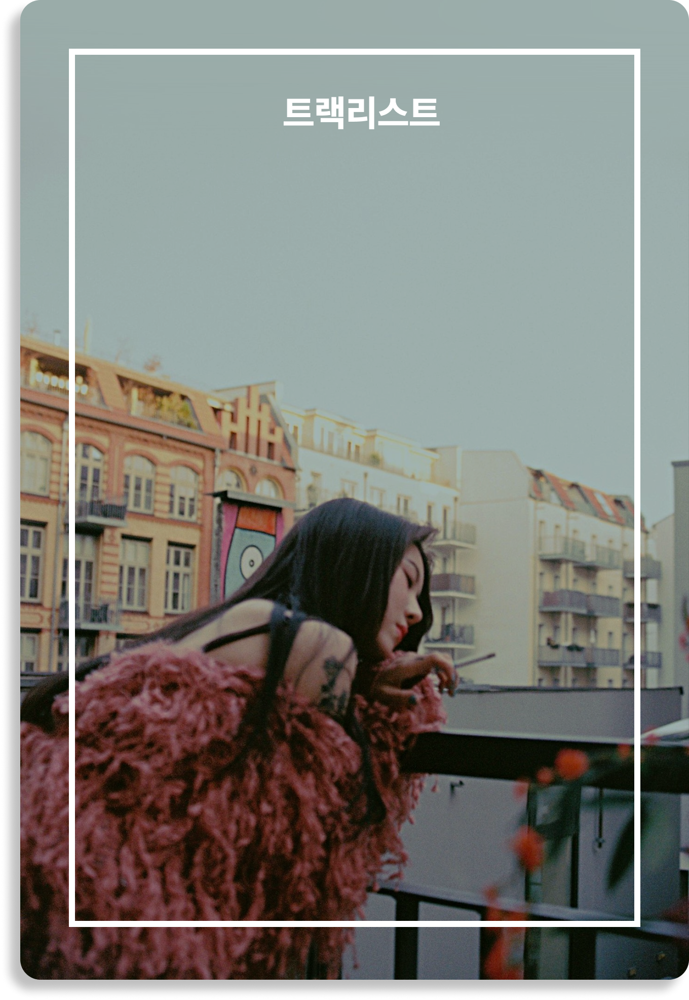
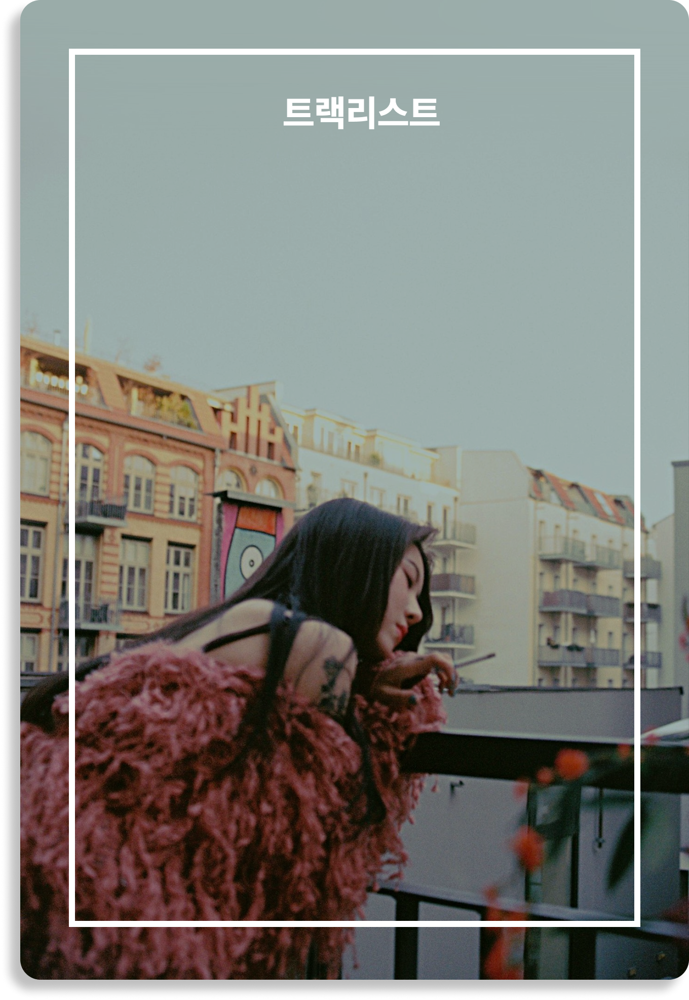
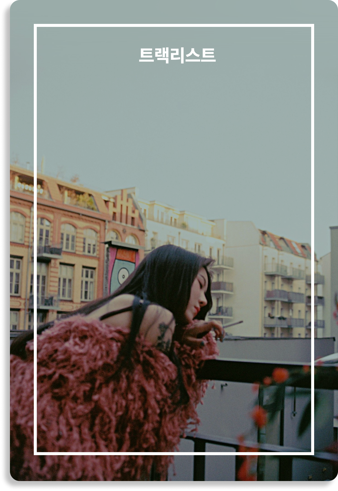

VINYL Every letter I sent you.

Every letter I sent you.는 대한민국의 싱어송라이터 백예린의 첫
스튜디오 음반이다. 2019년 12월 10일 드림어스컴퍼니에 의해 배급되고
블루 비닐에 의해 발매되었다. 18개 곡이 장식되어 있으며 그 중 "Popo
(How Deep Is Our Love?)", "0310", "Square (2017)"이 이 음반의 3개의
싱글로서 동시에 발매되었다. 오프라인 음반은 CD와 LP 포맷으로 구매가
가능하다.
백예린이 2019년 9월 JYP 엔터테인먼트를 떠난
이후의 새로운 첫 레이블 발매이다.
내가 너에게 보냈던 모든 편지들.
이번 앨범은 19살부터 23살까지 제 생각과 고민, 추억들이 담겨있어요.
정확한 주소가 있진 않았지만 꾸준히 제 마음을 곡에 담아 부치곤 했는데,
이제 여러분들에게 정말로 보낼 수 있게 되어 기쁘네요! 그 동안 저의
성장을 지켜봐 주시고 애정해주신 분들께 감사하는 마음을 담았습니다.
사랑을 담아, 예린 올림.
Every letter I sent you.
CD 1
1. Intro
Composed by 백예린 Arranged by 구름
2. Rest
Composed by 백예린 Lyrics by 백예린 Arranged by 백예린, 구름 Vocal
백예린 Chorus 백예린 Drum 김다빈 Bass guitar 구름 Elec guitar jonny
Keyboard 구름 String arrange d.ear String 융스트링 Flute 박기훈 MIDI
programming 구름 Drum Recorded by허정욱 @velvet studio
3. Popo (How deep is our love?)
Composed by 백예린, 구름 Lyrics by 백예린 Arranged by 구름 Vocal
백예린 Chorus 백예린 Drum 김다빈 Bass guitar 구름 Elec guitar jonny
Keyboard 구름 String arrange 박기훈, 구름 String 융스트링 Horn section
arrange 박기훈 Flute 박기훈 Saxophone 박기훈 Trumpet 홍태훈 Trumbone
박경건 MIDI programming 구름 Drum Recorded by허정욱 @velvet studio
String recorded by 이찬미 @서울스튜디오
4. can i b u
Composed by 백예린 Lyrics by 백예린 Arranged by 백예린 Vocal 백예린
Guitar 백예린
5. Meant to be
Composed by 백예린 Lyrics by 백예린 Arranged by 백예린, 구름 Vocal
백예린 Chorus 백예린 Drum 김다빈 Bass guitar 구름 Elec guitar jonny
Piano 구름 String arrange 구름 String 융스트링 Drum Recorded by허정욱
@velvet studio String recorded by 이찬미 @서울스튜디오
6. Mr.gloomy
Composed by 백예린 Lyrics by 백예린 Arranged by 백예린, 구름 Vocal
백예린 Chorus 백예린, 구름 Drum 김다빈 Bass guitar 구름 Elec guitar
jonny Keyboard 구름, 백예린 MIDI programming 구름, 백예린 Drum
Recorded by허정욱 @velvet studio
7. lovelovelove
Composed by 백예린 Lyrics by 백예린 Arranged by 백예린, 구름 Vocal
백예린 Chorus 백예린, 구름 Drum 김다빈 Bass guitar 구름 Elec guitar
jonny, 구름 Acoustic guitar jonny Keyboard 구름 String arrange d.ear
String 융스트링 MIDI programming 구름 Drum Recorded by허정욱 @velvet
studio String recorded by 이찬미 @서울스튜디오
8. Bunny
Composed by 백예린 Lyrics by 백예린 Arranged by 백예린, 구름 Vocal
백예린 Chorus 백예린, 구름 Drum 김치헌 Bass guitar 구름 Elec guitar
jonny Keyboard 구름 MIDI programming 구름
9. 0310
Composed by 백예린 Lyrics by 백예린 Arranged by 백예린, 구름 Vocal
백예린 Chorus 백예린 Drum 김치헌 Bass guitar 구름 Elec guitar 백예린,
jonny, 구름 Acoustic guitar jonny Keyboard 구름 String arrange 구름
String 융스트링 MIDI programming 구름 String recorded by 이찬미
@서울스튜디오
CD 2
1. Berlin
Composed by 백예린 Lyrics by 백예린 Arranged by 백예린 Vocal 백예린
Piano 구름
2. Datoom
Composed by 백예린 Lyrics by 백예린 Arranged by 백예린, 구름 Vocal
백예린 Chorus 백예린 Drum 김다빈 Bass guitar 구름 Elec guitar jonny,
구름 Keyboard 구름 Flute 박기훈 MIDI programming 구름 Drum Recorded
by허정욱 @velvet studio String recorded by 이찬미 @서울스튜디오
3. Not a girl
Composed by 백예린 Lyrics by 백예린 Arranged by 백예린, 구름 Vocal
백예린 Chorus 백예린 Bass guitar 구름 Elec guitar jonny, 구름 Keyboard
구름 MIDI programming 구름, 백예린
4. Newsong2
Composed by 백예린, 구름 Lyrics by 백예린 Arranged by 구름 Vocal
백예린 Chorus 백예린 Bass guitar 구름 Elec guitar 구름 Keyboard 구름
MIDI programming 구름
5. Amy
Composed by 백예린, 구름 Lyrics by 백예린 Arranged by 구름 Vocal
백예린 Elec guitar 구름 MIDI programming 구름
6. True lover
Composed by 백예린, 구름 Lyrics by 백예린 Arranged by 구름 Vocal
백예린 Elec guitar jonny Keyboard 구름 Horn section arrange 박기훈
Saxophone 박기훈 Trumpet 홍태훈 Trumbone 박경건 MIDI programming 구름
7. Point (Feat. Loopy)
Composed by 백예린 Lyrics by 백예린, Loopy Arranged by 백예린, 구름
Vocal 백예린 Rap Loopy Chorus 백예린 Drum 김치헌 Bass guitar 구름 Elec
guitar 백예린, jonny, 구름 Keyboard 구름 MIDI programming 구름
8. Square (2017)
Composed by 백예린, 구름 Lyrics by 백예린 Arranged by 구름 Vocal
백예린 Chorus 백예린 Drum 김치헌 Bass guitar 구름 Elec guitar jonny,
구름 Keyboard 구름 MIDI programming 구름
9. London
Composed by 백예린, 구름 Lyrics by 백예린 Arranged by 구름 Vocal
백예린 Chorus 백예린, 구름 Bass guitar 구름 Keyboard 구름 MIDI
programming 구름